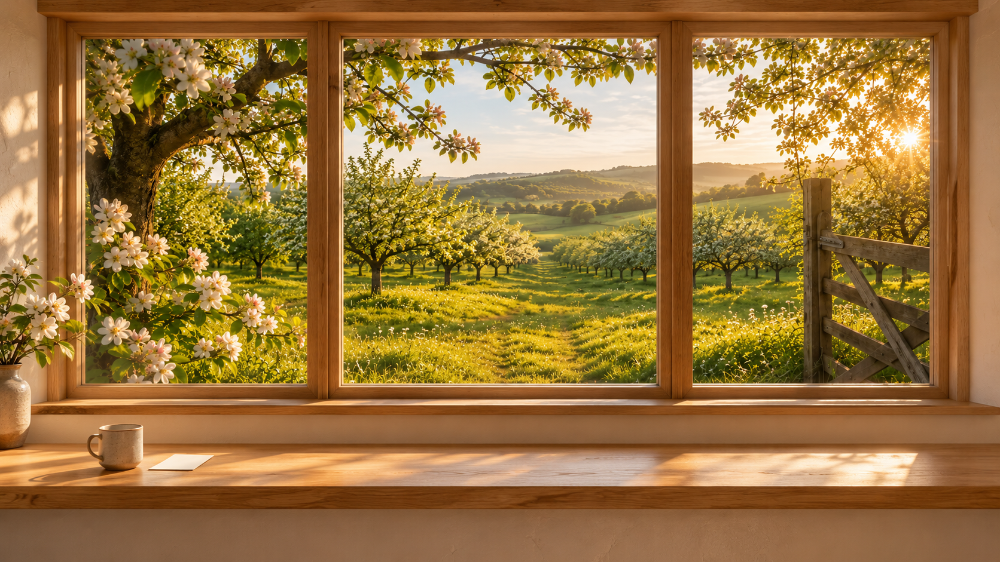
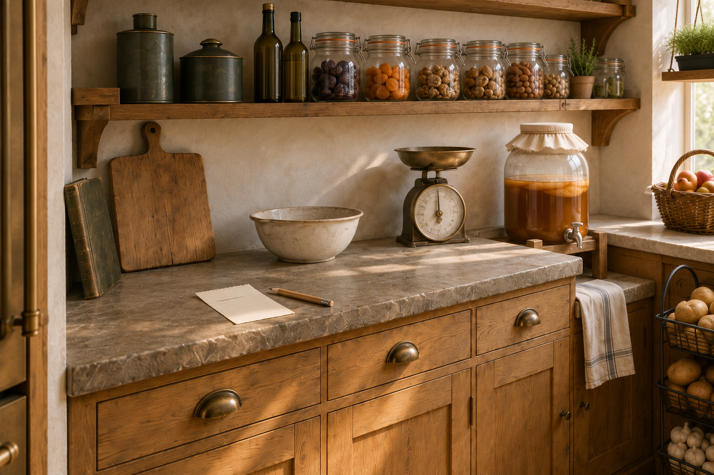
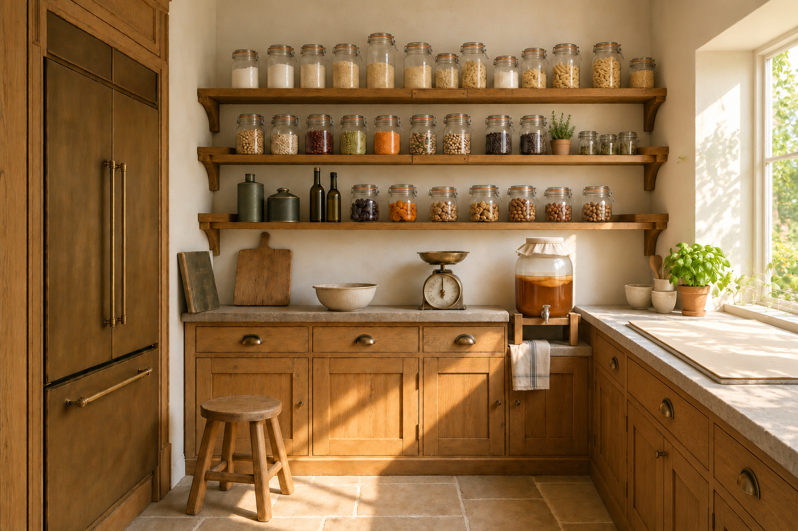
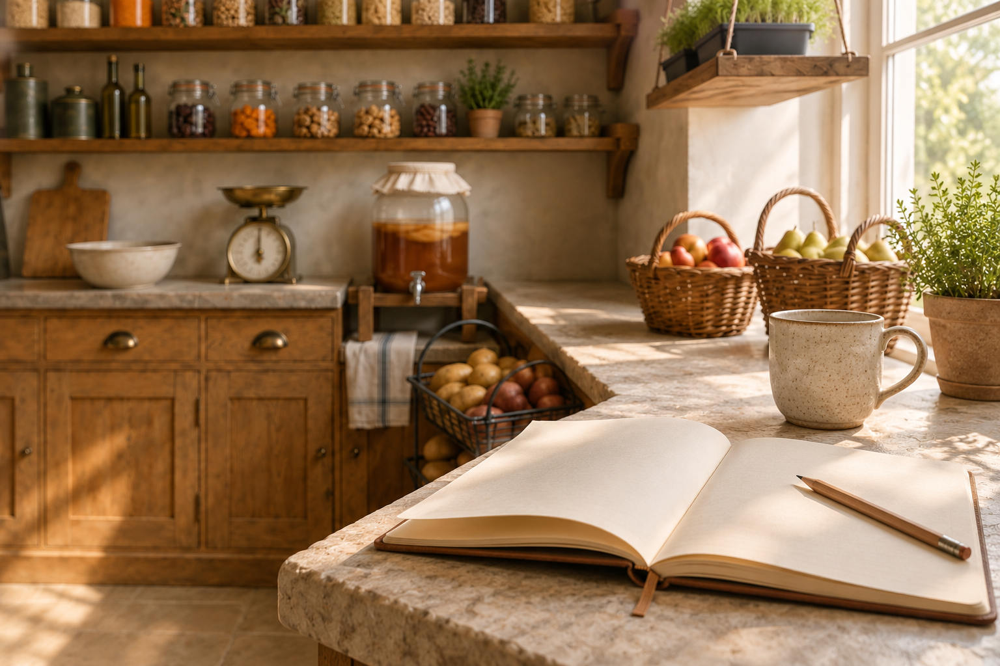
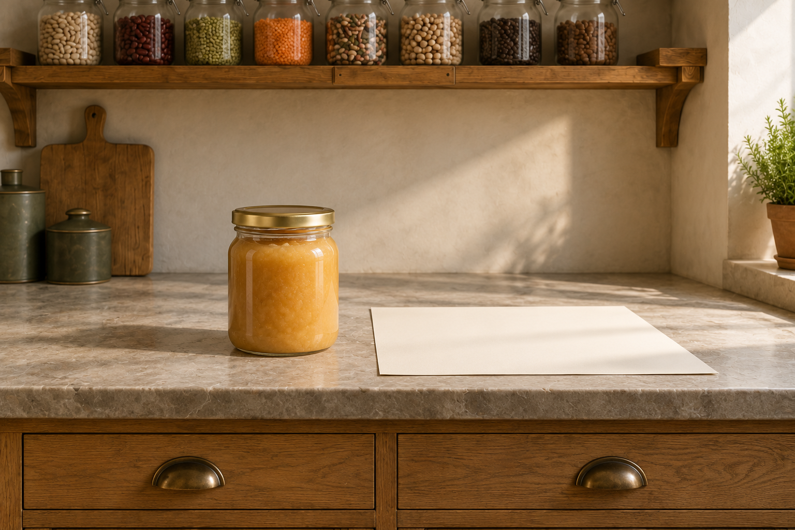
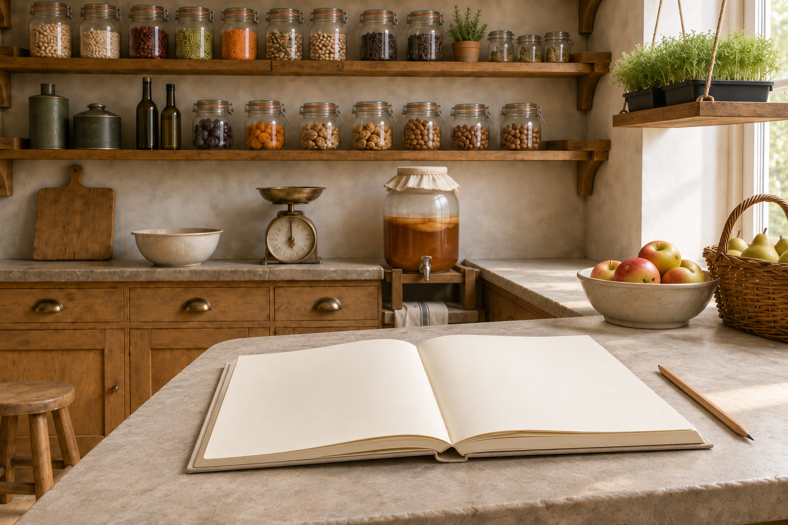

One home, six possible room feelings
Exploratory images for Colin's morning review · 26 October 2026
UNACCEPTED CONCEPTS — NOT READY AS SIX DISTINCT ROOM DESIGNS. Independent review on 27 October found that five studies reuse the Pantry scene so strongly that their task identities are weak. They remain visual exploration, not approved production assets. The current Experience Blueprint prohibits literal photographed rooms beyond the exact approved Planner exception. The implementation plan uses governed light, material and composition unless the Home Owner separately approves an architecture change.

Home — threshold and heartBased on the existing canonical orchard asset; the view is the welcome.

Shopping study — task identity too weakThe list is too small; this does not yet depict a usable Shopping room.

Nutrition study — shared warmth onlyThe noticeboard and data tier are not yet legible as a separate room.

Diary study — shared warmth onlyA blank book does not yet establish the governed window-seat posture.

Analyser study — shared warmth onlyThe examined product needs a much clearer task-first setting.

Household study — shared warmth onlyA blank record alone does not make the family first-class.